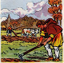

81
Je m'avance et Paf! Un bon coup de poing sur le nez de ce paysan impoli! « Aïe! Mais qu'est-ce qui vous prend! Ce n'était qu'une blague! Mais quelle sorte de chevalier êtes vous pour taper sur les pauvres gens comme ça! » Oups! Ce n'était pas très chevaleresque de ma part de donner un coup de poing à ce pauvre fermier... Oh non! Il y a une des pièces d'or magiques du lutin qui a disparu! Je présente mes excuses au fermier et je pars pour le village maintenant.
|